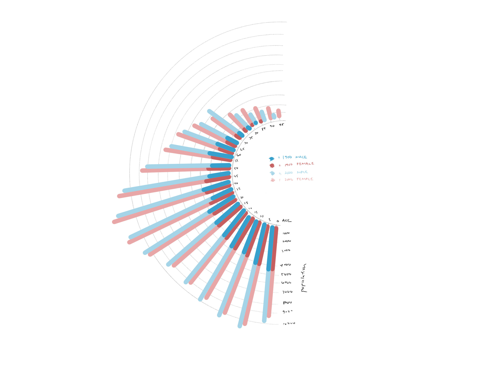

Comparison of female vs male population in a vertical orientation that correlates to ‘growing up’ with older ages at the top, and younger ages at the bottom.
Puts male and female data side by side for better comparison
Overlays the 1900 and 2000 data on top of each other to visually see the difference
Both axis start from 0 for better grounding
Blue used for male and pink used for female for better familiarity with commonly used colors for genders
Looks like a standard demographic chart, could be more unique
Blue used for male and pink used for female for better familiarity with commonly used colors for genders
Map oriented in a circle that goes clockwise as the age gets older, in reference to growing up over time
1900 and 2000 plotted on the same graph to visually show the comparison in growth of population
Orientation of the map could be confusing and distract from the main point of the graph
Growth of Male and Female Populations in 1900 vs 2000
Age axis is oriented vertically and clockwise as a combination of the ideas from both previous sketches
Overlaid 1900 and 2000 yearly population on top of each other to better visualize the growth
Places male and female bars next to each other to better compare the lengths/populations
Could include more information about relative percentages
Summary
Reflecting on the three sketches, each presents distinct strengths and weaknesses. Sketch 1 offers a conventional demographic chart format with clear male and female comparisons and overlays historical data for visual contrast. However, its conventional appearance lacks uniqueness. Sketch 2 introduces a circular map layout, visually representing age progression, yet this orientation may confuse viewers. Sketch 3 synthesizes elements from both prior designs, combining vertical age orientation with side-by-side gender comparison and historical overlays. Still, it could enhance clarity by including relative percentages and better annotations. Moving forward, a hybrid approach incorporating the unique aspects of each sketch while addressing their respective weaknesses could yield a more compelling visualization. Integrating the vertical age axis with side-by-side gender comparison and additional data insights could offer a balanced and informative presentation.
Phase Two: Final Design
Question: How does the male and female population in the United States change between 1900 and 2000?
The visualization above evolves from the initial sketches by incorporating key design elements to effectively communicate demographic trends. The decision to represent age as a half-circle graph follows intuitive age progression, facilitating easy comprehension. The color scheme, using pink for females and blue for males, maintains consistency and aids in gender differentiation. Placing male and female year bars adjacent allows for straightforward comparison, while overlaying previous year data enhances visual contrast and highlights population changes over time. Additionally, the inclusion of a percentage change graph provides deeper insight into population dynamics, revealing that while younger age groups have higher populations, their percentage growth is smaller compared to older age groups.
Throughout the design process, the goal was to tell a clear and informative story about demographic shifts. The use of a half-circle graph and consistent color scheme prioritizes clarity and ease of understanding. By including both absolute population data and percentage change information, the visualization offers a comprehensive view of demographic trends. Phase one sketches played a crucial role in informing this final design. Elements such as the circular orientation of age and the side-by-side comparison of genders were retained from the sketches due to their effectiveness in conveying information. However, the addition of the percentage change graph and refinement of layout were influenced by the need for deeper insights and improved clarity. Overall, phase one sketches provided a foundation for exploration and refinement, ultimately guiding the creation of a more robust and informative visualization.
{kind=link}
{kind=link}
{kind=link}
{kind=link}